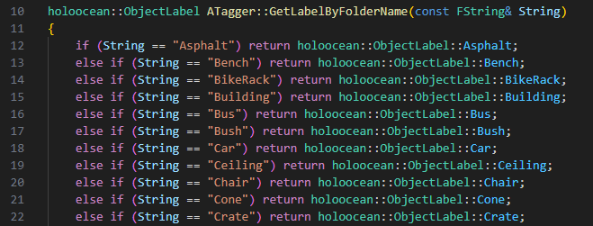
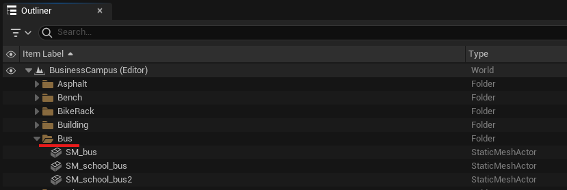
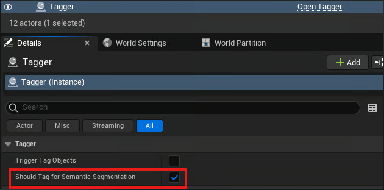
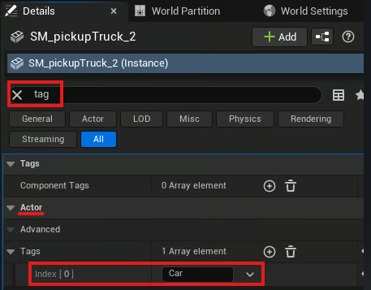

Adding Custom Semantic Labels
For semantic labels to be seen by HoloOcean, each asset in a level must be tagged and have rendering settings changed. These changes must be done within the Unreal Editor.
Note
HoloOcean’s semantic implementation uses Stencil Values as labels, which limits labels to values 0-255.
To assist with this, HoloOcean provides a Tagger class that can automatically apply labels based on the folder title of the objects. If you don’t need any custom labels, you can reference HoloOcean’s list of labels found at Available Semantic Labels and continue with Automatic Labels Using the Tagger.
Setting up Custom Labels
To add new labels to HoloOcean, you will need to add them to a few C++ files and choose a color to associate with your label.
Custom Labels
To add custom labels, add your tag names to the GetLabelByFolderName function in Tagger.cpp and to the ObjectLabel enum in ObjectLabel.h.
Example of folder titles included in “GetLabelByFolderName”

Example of numbers associated with folder titles in “ObjectLabel”
Change Label Colors
To change the colors associated with each label, you can alter the RGB values listed in engine/source/Holodeck/Utils/Public/HolooceanPallete.h.

Labeling Assets
Automatic Labels Using the Tagger
To let the Tagger automatically add labels, you need to make sure that your assets are placed in folders that coordinate with their label. For example, all bus assets placed in a folder “Bus” will be labeled with the StencilValue that coordinates with “Bus”.
Next, enable the Tagger. From within the Unreal Editor, locate C++ Classes and navigate to Holodeck/Utils/Public/Tagger to find the Tagger c++ file.

Drag the Tagger C++ file into your level. From within the Details panel, click on tha Tagger and enable “Should Tag for Semantic Segemtation”
Then, click on “Trigger Tag Objects” to automatically apply labels.

Manual Labels
To set tags manually, in the Details panel select the asset you wish to tag. For that asset, search “tag” to find Actor tags. Add your tag to the Actor Tags list.
Then, search “depth” and enable “Render CustomDepth Pass” And set the “CustomDepth Stencil Value” to the value that associates with your tag. Do this for each asset you with to tag. Adittionally, enable “Render CustomDepth Pass” for the landscape to ensure it is visible in depth outputs.

Available Semantic Labels
Below is the list of all labels currently implemented in HoloOcean. Each world in the Ocean and BusinessCampus packages uses a subset of these labels, depending on the assets in that world (see BusinessCampus and the world subpages in Ocean Package ).
Folder Title |
Stencil Value |
RGB Value |
|---|---|---|
None |
0 |
{0, 0, 0} |
Cube |
1 |
{240, 29, 219} |
Sphere |
2 |
{29, 89, 240} |
BaseShape |
3 |
{29, 240, 89} |
Landscape |
4 |
{153, 153, 153} |
GroundGrass |
5 |
{91, 235, 52} |
GroundRock |
6 |
{196, 101, 6} |
Ground |
7 |
{194, 164, 159} |
GroundPath |
8 |
{76, 117, 252} |
WaterPlane |
9 |
{66, 135, 245} |
Boat |
10 |
{128, 64, 128} |
Yacht |
11 |
{70, 70, 70} |
ContainerBoat |
12 |
{102, 102, 156} |
Concrete |
13 |
{214, 138, 230} |
Pipe |
14 |
{73, 227, 78} |
PipeCover |
15 |
{85, 166, 3} |
VentCover |
16 |
{245, 215, 66} |
Rock |
17 |
{153, 115, 9} |
Seaweed |
18 |
{75, 166, 5} |
Coral |
19 |
{235, 64, 52} |
Plane |
20 |
{176, 165, 146} |
Sub |
21 |
{146, 161, 176} |
Pier |
22 |
{186, 76, 2} |
Buoy |
23 |
{237, 53, 7} |
Trash |
24 |
{107, 156, 137} |
Grass |
25 |
{91, 235, 52} |
Asphalt |
26 |
{79, 82, 77} |
Bench |
27 |
{212, 191, 125} |
BikeRack |
28 |
{209, 208, 203} |
Building |
29 |
{31, 240, 205} |
Bus |
30 |
{240, 220, 43} |
Bush |
31 |
{177, 247, 124} |
Car |
32 |
{224, 109, 237} |
Ceiling |
33 |
{161, 247, 233} |
Chair |
34 |
{65, 13, 255} |
Cone |
35 |
{255, 169, 10} |
Crate |
36 |
{140, 86, 0} |
Desk |
37 |
{242, 65, 224} |
Dumpster |
38 |
{0, 138, 14} |
FireHydrant |
39 |
{255, 0, 0} |
Floor |
40 |
{2, 125, 104} |
GarbageCan |
41 |
{0, 184, 92} |
Pallet |
42 |
{143, 129, 6} |
ParkingGate |
43 |
{222, 164, 177} |
PatioUmbrella |
44 |
{195, 0, 255} |
Railing |
45 |
{242, 97, 130} |
SemiTruck |
46 |
{124, 6, 138} |
Sidewalk |
47 |
{232, 232, 232} |
SpeedLimitSign |
48 |
{222, 218, 245} |
StopSign |
49 |
{250, 37, 62} |
StreetLamps |
50 |
{255, 149, 10} |
Table |
51 |
{186, 17, 169} |
Tree |
52 |
{69, 99, 46} |
Wall |
53 |
{126, 60, 250} |
Unlabeled |
54 |
{0, 0, 0} |
Any |
255 |
{255, 255, 255} |